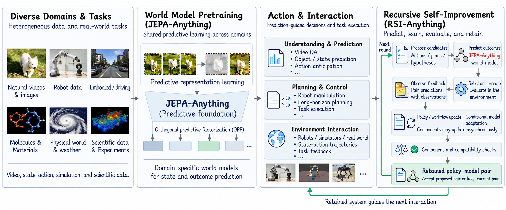
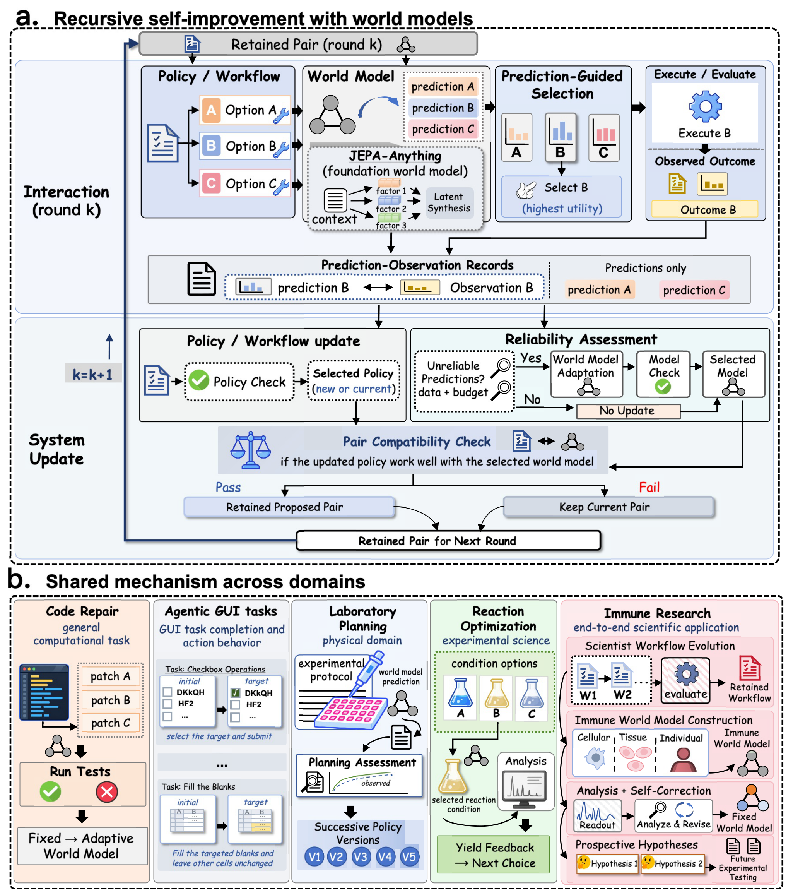
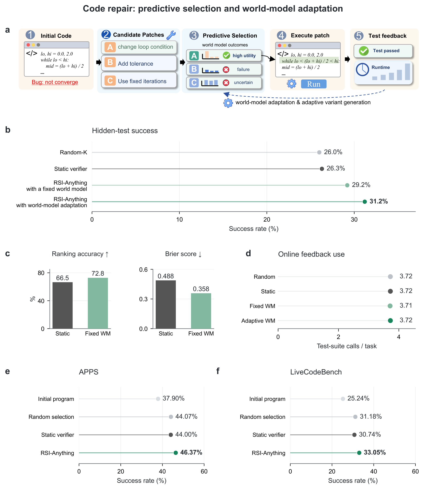
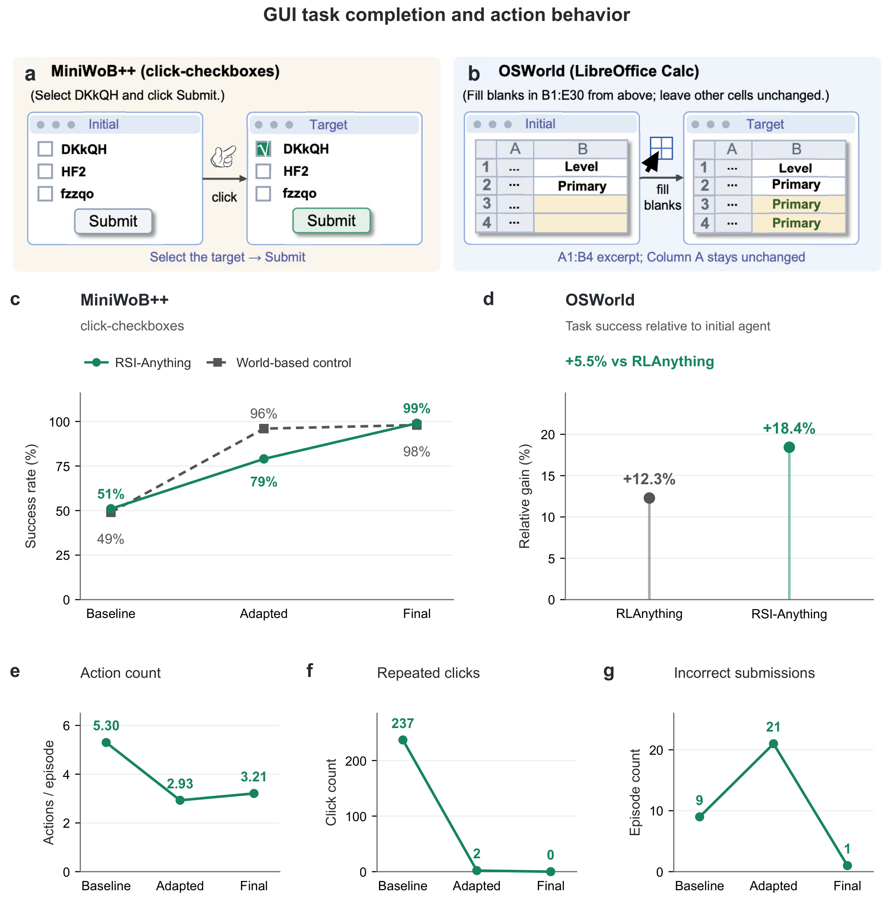
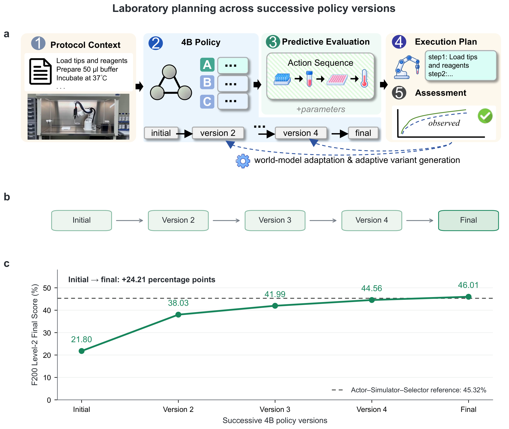
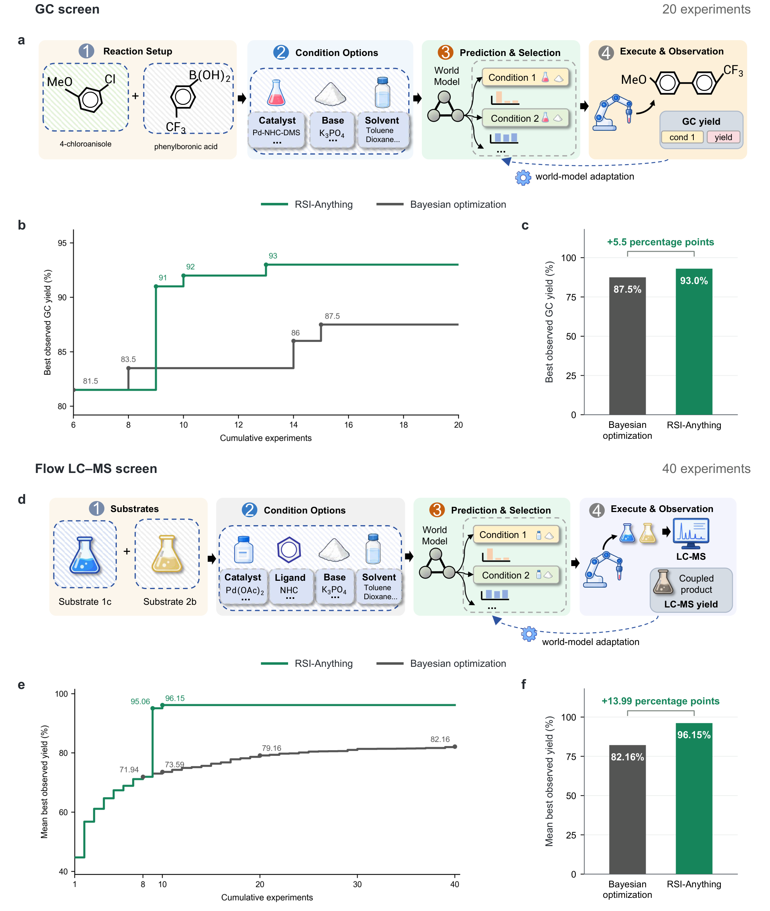
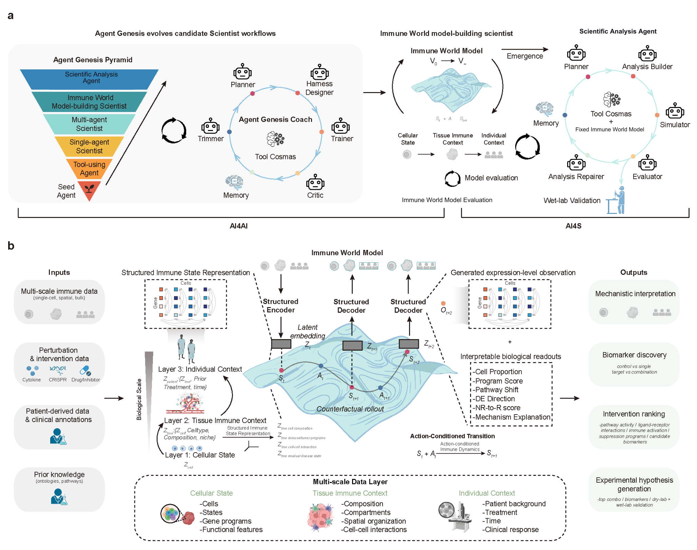

RSI-Anything：用世界模型与交互反馈推动递归自我改进
论文原文 ↗RSI-Anything: Unlocking Recursive Self-Improvement with World Models
Taoyong Cui 等｜arXiv:2610.13912，2026｜官方页面｜
智能体完成一次任务后，怎样把经验转为下一次还用得上的能力？递归自我改进关注的正是这种持续积累：交互产生反馈，反馈改善策略或模型，新版本再影响后续交互。困难在于，运行测试、执行操作或开展实验都需要成本；而策略变化后，预测器面对的候选也随之变化。
RSI-Anything 用世界模型预测候选动作的后果，帮助选择行动和学习数据，再用真实反馈改善策略、工作流程或预测模型。作者还引入新旧组件及组合表现的比较，决定哪些更新保留下来，使改进能够进入下一轮。论文在代码修复、界面操作、实验室规划、反应优化和免疫科学中展示这条路线。
方法怎样做：预测选择、反馈学习与更新保留形成循环
框架有两个角色。策略提出或选择动作，例如修复代码的补丁、界面点击或反应条件；世界模型则预测执行这些动作后可能发生什么。预测能够在候选尚未执行时提供排序信息，把有限外部反馈用到更有希望的动作上。

图1｜世界模型支持规划和动作选择，交互结果进一步推动系统更新，并影响下一轮行动。世界模型建立在 JEPA-Anything 的预测设计上。当前观测被编码成内部表示，候选动作作为条件输入，模型预测执行后的目标表示，再输出任务需要的结果。不同领域采用相应预测器，输出可以是测试结果概率、操作后的状态或反应产率。
被选中的动作实际执行后，系统保存当时预测与观测结果的对应关系。反馈一方面用于改善策略或持续使用的工作流程，另一方面在需要时用于适配世界模型。更新后的策略可能提出新的候选，新的预测器又会改变排序，因此作者分别比较组件表现及二者组合表现，选择能带来后续收益的配置保留下来。

图2｜预测—执行—观测数据进入策略改进或世界模型适配，新组合经过比较后接回下一轮。不同任务启用相应更新路径。主要结果：预测型选择与系统更新怎样改善任务表现
代码修复展示预测选择和模型适配的连续收益
在代码修复中，固定代码生成模型每轮提出四个补丁，系统选择一个执行测试，再利用反馈进行后续选择。作者将静态验证器、固定世界模型和可适配世界模型放到相同任务流程中比较。
静态验证器的最终成功率为 26.3%；用世界模型预测补丁效果后选择，成功率提高到 29.2%；进一步允许预测器吸收执行反馈，则达到 31.2%，测试使用量接近。这使两个作用连接起来：预测帮助挑选已有候选，交互数据又让后续预测与选择更好。

图3｜不同选择方式的代码修复结果，以及预测质量和测试使用量，展示世界模型进入行动决策后的收益。界面任务展示类似的反馈改进行为：随着保留配置更新，任务完成率提高，平均动作数减少 39.4%。作者同时跟踪重复点击与错误提交，使后续版本能够在操作效率和完成质量之间获得更好的组合。

图4｜界面任务的成功率、动作数和错误行为，说明交互反馈怎样支持更有效的操作。连续策略版本提高实验室规划得分
LabHorizon 提供实验协议、试剂与仪器条件，要求智能体生成符合任务的动作序列和参数。策略接收协议上下文，世界模型预测候选后果，开发反馈形成后续策略版本。
在同一组 200 个 F200 Level-2 任务上，五个连续策略版本的综合得分从 21.80% 依次提高到 38.03%、41.99%、44.56% 和 46.01%。该指标结合动作序列与参数表现，展示保留下来的工作策略能够在后续规划任务中持续改善。

图5｜从协议输入、预测与反馈，到五个策略版本的得分变化，将单次任务改进延伸为后续版本能力的积累。反应优化在相同实验预算下找到更高产率条件
化学应用将反应信息与条件向量送入 ReactionT5–JEPA-Anything 预测器，得到不同条件的产率分布。系统选择条件开展实验，将实测结果与此前预测配对，再指导下一次实验选择。
作者在两组 Suzuki–Miyaura 偶联筛选中与贝叶斯优化比较。GC 筛选进行 20 次实验后，最佳已观察产率为 93.0% 对 87.5%；流动 LC–MS 筛选在相同 40 次实验预算下，平均最佳已观察产率为 96.15% 对 82.16%。预测与反馈的配合，使有限实验次数更有效地转为高产率条件。

图6｜两组反应中，累计实验次数与已找到最好产率的关系。预测选择连接真实实验，测量结果再进入后续搜索。免疫科学应用与研究贡献
免疫科学案例将这一思路接入更长的科研流程。Agent Genesis 搜索并保留科学智能体的工作流程与建模配置，再建立连接细胞状态、组织环境和个体背景的免疫世界模型。细胞因子、基因扰动及候选干预作为动作输入，预测的生物读出用于比较候选与整理假说。
下游分析使用选定的免疫预测模型推进研究状态和干预排序，并提出 SIRPα 抑制与 IL-36γ 轴调节相结合的治疗假说。这展示了工作流程演化、预测建模和科学假说生成之间的连接。

图7｜工作流程演化建立预测模型，细胞、组织和个体信息进入状态表示，干预预测进一步支持候选假说。RSI-Anything 的核心贡献，是将世界模型的用途从预测结果扩展到选择动作、组织学习数据和保留系统更新。跨领域实验分别展示了更好的候选选择、预测器适配、持续策略进步及有限预算下的实验搜索。真实反馈因而既帮助完成当前任务，也参与塑造之后怎样行动和学习，使递归自我改进成为一条可操作的系统路线。
附：完整原始摘要中文翻译
递归自我改进（RSI）旨在将交互经验转化为持久的改进，但外部反馈代价高昂，而且随着策略演化，世界模型的预测可能变得不可靠。我们提出 RSI-Anything，这是一个建立在 JEPA-Anything 之上的跨领域通用框架，使用预测型世界模型指导动作选择和学习数据选择。观察到的反馈推动策略或工作流程改进，并在满足条件时促使世界模型适配；组件检查与兼容性检查则决定是否保留更新后的策略—模型组合。
RSI-Anything 在多种计算与科学领域展现出明显提升。在代码修复中，固定代码生成模型时，使用静态验证器的成功率为 26.3%，通过预测选择提高到 29.2%，世界模型适配后进一步达到 31.2%，测试使用量相当。图形用户界面（GUI）评估显示任务完成率更高，而平均动作数减少了 39.4%。在五个连续策略版本中，实验室规划得分从 21.80% 增至 46.01%，超过初始得分的两倍。在反应优化中，在相同的 40 次实验预算下，RSI-Anything 的平均最佳已观察产率达到 96.15%，贝叶斯优化为 82.16%。一项端到端免疫科学应用进一步将工作流程演化和预测建模与治疗假说生成联系起来。这些结果展示了预测型世界模型与被保留的系统更新如何使多种环境中的递归改进成为可能。